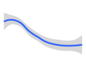
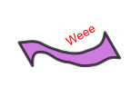
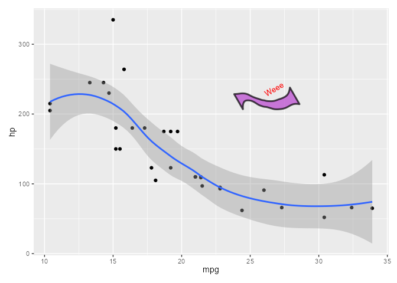
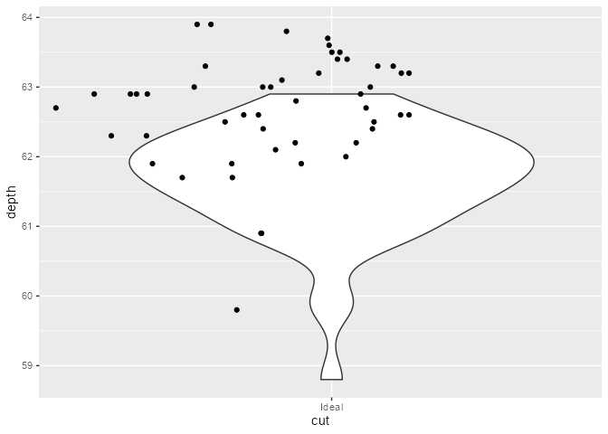
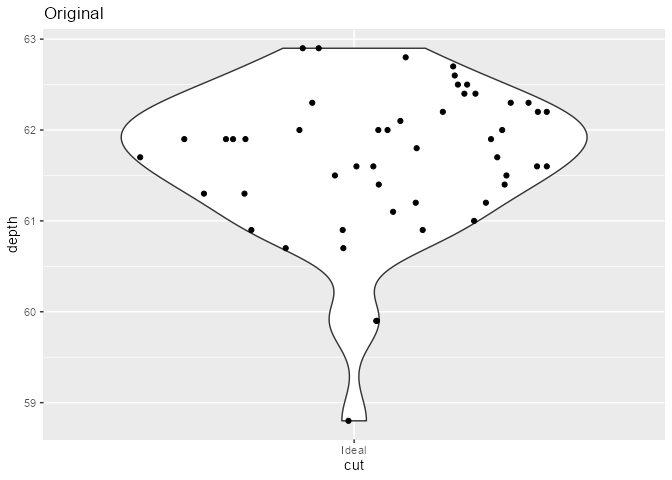
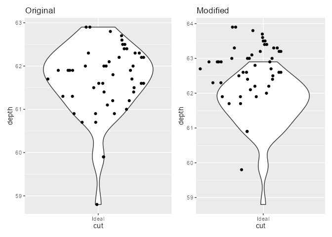

Programmatically inspect, debug, and manipulate ggplot internals
-
Lightweight ⚡
- The only dependency is rlang - not even ggplot2!
- Not a lot of code - most of the heavy lifting is done by
base::trace()
-
User-friendly ❤
- Everything happens in your local session - no need to fork a repo to inspect the internals!
- The output is available for inspection outside of the debugging
context with
last_ggtrace()andglobal_ggtrace() - Untraces on exit by default, like
debugonce()
-
Flexible 🛠
- Works on any functions and object methods, not just ggproto!
- You can programmatically debug with
ggtrace()or interactively debug withggedit() - Since
ggtrace()doesn’t rely on interactivity, it can be used in reprex-es - Plays nice with existing debugging tools (ex: you can insert
browser()calls deep inside the body withggedit())
-
Powerful 💪
- Return the execution environment with
ggtrace()for further inspection - Modify the execution environment by passing assignment expressions
to
ggtrace() - Change the source code with
ggedit(), which is restored upongguntrace()
- Return the execution environment with
More on the 📦 package website: https://yjunechoe.github.io/ggtrace
Installation
You can install the development version from GitHub with:
# install.packages("remotes")
remotes::install_github("yjunechoe/ggtrace")
library(ggtrace) # v0.4.6
Example 1 - compute_layer method from
PositionJitter
Step 1. Make plot
library(ggplot2) # v3.3.5
jitter_plot <- ggplot(diamonds[1:1000,], aes(cut, depth)) +
geom_point(position = position_jitter(width = 0.2, seed = 2021))
jitter_plot
Step 2. Inspect body of the ggproto method
ggbody(PositionJitter$compute_layer)
#> [[1]]
#> `{`
#>
#> [[2]]
#> trans_x <- if (params$width > 0) function(x) jitter(x, amount = params$width)
#>
#> [[3]]
#> trans_y <- if (params$height > 0) function(x) jitter(x, amount = params$height)
#>
#> [[4]]
#> x_aes <- intersect(ggplot_global$x_aes, names(data))
#>
#> [[5]]
#> x <- if (length(x_aes) == 0) 0 else data[[x_aes[1]]]
#>
#> [[6]]
#> y_aes <- intersect(ggplot_global$y_aes, names(data))
#>
#> [[7]]
#> y <- if (length(y_aes) == 0) 0 else data[[y_aes[1]]]
#>
#> [[8]]
#> dummy_data <- new_data_frame(list(x = x, y = y), nrow(data))
#>
#> [[9]]
#> fixed_jitter <- with_seed_null(params$seed, transform_position(dummy_data,
#> trans_x, trans_y))
#>
#> [[10]]
#> x_jit <- fixed_jitter$x - x
#>
#> [[11]]
#> y_jit <- fixed_jitter$y - y
#>
#> [[12]]
#> transform_position(data, function(x) x + x_jit, function(x) x +
#> y_jit)
Step 3. ggtrace() - including the last line
with keyword ~step
ggtrace(
method = PositionJitter$compute_layer,
trace_steps = c(1, 1, 9, 12),
trace_exprs = rlang::exprs(
data, # What does the data passed in look like?
params, # What do the initial parameters look like?
dummy_data, # What is `dummy_data` defined at Step 8?
~step # What does the last line evaluate to?
# - i.e., what is returned by the method?
),
print_output = FALSE # Don't print evaluated expressions to console
)
#> `PositionJitter$compute_layer` now being traced.
# plot not printed to save space
jitter_plot
#> Triggering trace on `PositionJitter$compute_layer`
#> Untracing `PositionJitter$compute_layer` on exit.Step 4. Inspect trace dump
jitter_tracedump <- last_ggtrace()
jitter_tracedump[[2]]
#> $width
#> [1] 0.2
#>
#> $height
#> [1] 0.04
#>
#> $seed
#> [1] 2021
lapply(jitter_tracedump[-2], nrow)
#> [[1]]
#> [1] 1000
#>
#> [[2]]
#> [1] 1000
#>
#> [[3]]
#> [1] 1000
lapply(jitter_tracedump[-2], head, 3)
#> [[1]]
#> x y PANEL group
#> 1 5 61.5 1 5
#> 2 4 59.8 1 4
#> 3 2 56.9 1 2
#>
#> [[2]]
#> x y
#> 1 5 61.5
#> 2 4 59.8
#> 3 2 56.9
#>
#> [[3]]
#> x y PANEL group
#> 1 4.980507 61.50684 1 5
#> 2 4.113512 59.77872 1 4
#> 3 2.083873 56.86655 1 2
Example 2 - draw_group method from
GeomSmooth
Step 1. Make plot
smooth_plot <- ggplot(mtcars, aes(mpg, hp)) +
geom_point() +
stat_smooth(method = "loess", formula = y ~ x)
smooth_plot
Step 2. Inspect body of the ggproto method
ggbody(GeomSmooth$draw_group)
#> [[1]]
#> `{`
#>
#> [[2]]
#> ribbon <- transform(data, colour = NA)
#>
#> [[3]]
#> path <- transform(data, alpha = NA)
#>
#> [[4]]
#> ymin = flipped_names(flipped_aes)$ymin
#>
#> [[5]]
#> ymax = flipped_names(flipped_aes)$ymax
#>
#> [[6]]
#> has_ribbon <- se && !is.null(data[[ymax]]) && !is.null(data[[ymin]])
#>
#> [[7]]
#> gList(if (has_ribbon) GeomRibbon$draw_group(ribbon, panel_params,
#> coord, flipped_aes = flipped_aes), GeomLine$draw_panel(path,
#> panel_params, coord))
Step 3. ggtrace() - get the
gList()
ggtrace(
method = GeomSmooth$draw_group,
trace_steps = -1, # Trace the last line
trace_exprs = quote(~step), # Grab the gList() object it returns
print_output = FALSE
)
#> `GeomSmooth$draw_group` now being traced.
# plot not printed to save space
smooth_plot
#> Triggering trace on `GeomSmooth$draw_group`
#> Untracing `GeomSmooth$draw_group` on exit.Step 4. Inspect trace dump
Get grobs in the gList and do some weird stuff with it.
This is nice because you don’t have to navigate the whole list of
ggplotGrob(smooth_plot)[["grobs"]].
smooth_tracedump <- last_ggtrace()
smooth_gList <- smooth_tracedump[[1]]
smooth_gList
#> (gTree[geom_ribbon.gTree.132], polyline[GRID.polyline.133])
library(grid)
grid.ls(smooth_gList)
#> geom_ribbon.gTree.132
#> GRID.polygon.129
#> GRID.polyline.130
#> GRID.polyline.133
grid.newpage()
grid.draw(gTree(children = smooth_gList, vp = viewport()))
# The weird stuff
smooth_ribbon_polygon <- editGrob(
smooth_gList[1][[1]],
"polygon",
grep = TRUE,
gp = gpar(fill = "#b742ce", alpha = 0.7, lwd = 3, col = "black")
)
smooth_ribbon_gTree <- gTree(
children = gList(
smooth_ribbon_polygon,
textGrob("Weee", x = .7, gp = gpar(col = "red", fontsize = unit(10, "pt")))
),
vp = viewport(width = 1, height = 1, default.units = "in", angle = 30)
)
grid.newpage()
grid.draw(smooth_ribbon_gTree)
You might use this for some fancy data-driven legends or something, though it’s meant to be exploratory not practical.
library(patchwork)
smooth_plot +
inset_element(
wrap_elements(full = smooth_ribbon_gTree) +
theme(plot.background = element_rect(fill = NA, color = NA)),
left = 0.5, bottom = 0.5, right = 0.8, top = 0.8
)
Example 3 - compute_panel method from
StatBoxplot
Step 1. Make plot
boxplot_plot <- ggplot(diamonds[1:500,], aes(cut, depth)) +
geom_boxplot()
boxplot_plot
Step 2. Inspect body of the ggproto method
Actually, "compute_panel" method is not defined for
StatBoxplot. ggbody() gives you a hint that it
may be inherited.
ggbody(StatBoxplot$compute_panel)
#> Error: Method 'compute_panel' is not defined for `StatBoxplot`
#> Check inheritance with `ggbody(StatBoxplot$compute_panel, inherit = TRUE)`StatBoxplot is a child of the parent ggproto
Stat, and the "compute_panel" method is
inherited from Stat as well, so that’s what we want to
trace instead:
class(StatBoxplot)
#> [1] "StatBoxplot" "Stat" "ggproto" "gg"With inherit = TRUE, ggbody() returns the
method as defined in the closest parent, and the corresponding code to
get it. We confirm that we should be passing
Stat$compute_panel to the method argument for
ggtrace().
ggbody(StatBoxplot$compute_panel, inherit = TRUE)
#> Returning `ggbody(Stat$compute_panel)`
#> [[1]]
#> `{`
#>
#> [[2]]
#> if (empty(data)) return(new_data_frame())
#>
#> [[3]]
#> groups <- split(data, data$group)
#>
#> [[4]]
#> stats <- lapply(groups, function(group) {
#> self$compute_group(data = group, scales = scales, ...)
#> })
#>
#> [[5]]
#> stats <- mapply(function(new, old) {
#> if (empty(new))
#> return(new_data_frame())
#> unique <- uniquecols(old)
#> missing <- !(names(unique) %in% names(new))
#> cbind(new, unique[rep(1, nrow(new)), missing, drop = FALSE])
#> }, stats, groups, SIMPLIFY = FALSE)
#>
#> [[6]]
#> rbind_dfs(stats)
Step 3. ggtrace() - retrieve the parent
environment
Stat$compute_panel does split-apply-combine (Steps 3,
4-5, 6).
Let’s return the split and the combine:
ggtrace(
Stat$compute_panel,
trace_steps = c(3, 6, 6),
trace_exprs = rlang::exprs(
splits = ~step, # What are the splits?
combined = ~step, # What does the combined result look like?
runtime_env = environment() # Grab the method's execution environment
),
use_names = TRUE, # Use names of `trace_exprs` for names of the tracedump (default)
verbose = FALSE # Suppress all printing (except `message()`s)
# This entails the effects of `print_output = FALSE`
)
#> `Stat$compute_panel` now being traced.
# plot not printed to save space
boxplot_plot
#> Triggering trace on `Stat$compute_panel`
#> Untracing `Stat$compute_panel` on exit.Step 4. Inspect trace dump
boxplot_tracedump <- last_ggtrace()
# Trace dump is named after `trace_exprs`
names(boxplot_tracedump)
#> [1] "splits" "combined" "runtime_env"
# Inspect the splits
sapply(boxplot_tracedump[["splits"]], nrow)
#> 1 2 3 4 5
#> 26 51 127 144 152
lapply(boxplot_tracedump$splits, head, 3)
#> $`1`
#> x y PANEL group
#> 9 1 65.1 1 1
#> 92 1 55.1 1 1
#> 98 1 66.3 1 1
#>
#> $`2`
#> x y PANEL group
#> 3 2 56.9 1 2
#> 5 2 63.3 1 2
#> 11 2 64.0 1 2
#>
#> $`3`
#> x y PANEL group
#> 6 3 62.8 1 3
#> 7 3 62.3 1 3
#> 8 3 61.9 1 3
#>
#> $`4`
#> x y PANEL group
#> 2 4 59.8 1 4
#> 4 4 62.4 1 4
#> 13 4 60.4 1 4
#>
#> $`5`
#> x y PANEL group
#> 1 5 61.5 1 5
#> 12 5 62.8 1 5
#> 14 5 62.2 1 5
# Manually calculating some boxplot parameters
lapply(boxplot_tracedump[["splits"]], function(group) {
quantile(group$y, c(0, 0.25, 0.5, 0.75, 1))
})
#> $`1`
#> 0% 25% 50% 75% 100%
#> 53.100 58.850 64.800 65.775 68.100
#>
#> $`2`
#> 0% 25% 50% 75% 100%
#> 56.90 60.20 63.30 63.95 65.20
#>
#> $`3`
#> 0% 25% 50% 75% 100%
#> 57.5 60.7 62.0 63.1 64.0
#>
#> $`4`
#> 0% 25% 50% 75% 100%
#> 58.000 60.700 61.500 62.325 63.000
#>
#> $`5`
#> 0% 25% 50% 75% 100%
#> 58.80 61.30 61.75 62.20 62.90
# The combined result
boxplot_tracedump[["combined"]]
#> ymin lower middle upper ymax outliers notchupper notchlower x
#> 1 53.1 58.85 64.80 65.775 68.1 66.94580 62.65420 1
#> 2 56.9 60.20 63.30 63.950 65.2 64.12967 62.47033 2
#> 3 57.5 60.70 62.00 63.100 64.0 62.33649 61.66351 3
#> 4 58.3 60.70 61.50 62.325 63.0 58.0, 58.0, 58.2, 58.0 61.71396 61.28604 4
#> 5 60.1 61.30 61.75 62.200 62.9 58.8, 59.9, 59.9 61.86534 61.63466 5
#> width relvarwidth flipped_aes PANEL group
#> 1 0.75 5.099020 FALSE 1 1
#> 2 0.75 7.141428 FALSE 1 2
#> 3 0.75 11.269428 FALSE 1 3
#> 4 0.75 12.000000 FALSE 1 4
#> 5 0.75 12.328828 FALSE 1 5Using the returned environment opens up more powerful manipulations:
# What was inside the method environment?
ls(envir = boxplot_tracedump[["runtime_env"]])
#> [1] "data" "groups" "scales" "self" "stats"
# Evaluate the expression in Step 6 with the method's runtime environment
eval(
ggbody(Stat$compute_panel)[[6]],
envir = boxplot_tracedump[["runtime_env"]]
)
#> ymin lower middle upper ymax outliers notchupper notchlower x
#> 1 53.1 58.85 64.80 65.775 68.1 66.94580 62.65420 1
#> 2 56.9 60.20 63.30 63.950 65.2 64.12967 62.47033 2
#> 3 57.5 60.70 62.00 63.100 64.0 62.33649 61.66351 3
#> 4 58.3 60.70 61.50 62.325 63.0 58.0, 58.0, 58.2, 58.0 61.71396 61.28604 4
#> 5 60.1 61.30 61.75 62.200 62.9 58.8, 59.9, 59.9 61.86534 61.63466 5
#> width relvarwidth flipped_aes PANEL group
#> 1 0.75 5.099020 FALSE 1 1
#> 2 0.75 7.141428 FALSE 1 2
#> 3 0.75 11.269428 FALSE 1 3
#> 4 0.75 12.000000 FALSE 1 4
#> 5 0.75 12.328828 FALSE 1 5
# Manually call the compute_group method from StatBoxplot to apply
# transformation to the third group using the method environment
eval(
quote(StatBoxplot$compute_group(groups[[3]], scales, ...)),
envir = boxplot_tracedump[["runtime_env"]]
)
#> ymin lower middle upper ymax outliers notchupper notchlower x width
#> 1 57.5 60.7 62 63.1 64 62.33649 61.66351 3 0.75
#> relvarwidth flipped_aes
#> 1 11.26943 FALSE
Example 4 - compute_group method from
StatSina {ggforce}
Step 1. Make plot
library(ggforce) # v.0.3.3
sina_plot <- ggplot(diamonds[diamonds$cut == "Ideal",][1:50,], aes(cut, depth)) +
geom_violin() +
geom_sina(seed = 2021) +
ggtitle("Original")
sina_plot
Step 2. Inspect body of the ggproto method
ggbody(StatSina$compute_group)
#> [[1]]
#> `{`
#>
#> [[2]]
#> if (nrow(data) == 0) return(NULL)
#>
#> [[3]]
#> if (nrow(data) < 3) {
#> data$density <- 0
#> data$scaled <- 1
#> } else if (method == "density") {
#> range <- range(data$y, na.rm = TRUE)
#> bw <- calc_bw(data$y, bw)
#> dens <- compute_density(data$y, data$w, from = range[1],
#> to = range[2], bw = bw, adjust = adjust, kernel = kernel)
#> densf <- stats::approxfun(dens$x, dens$density, rule = 2)
#> data$density <- densf(data$y)
#> data$scaled <- data$density/max(dens$density)
#> data
#> } else {
#> bin_index <- cut(data$y, bins, include.lowest = TRUE, labels = FALSE)
#> data$density <- tapply(bin_index, bin_index, length)[as.character(bin_index)]
#> data$density[data$density <= bin_limit] <- 0
#> data$scaled <- data$density/max(data$density)
#> }
#>
#> [[4]]
#> if (length(unique(data$x)) > 1) {
#> width <- diff(range(data$x)) * maxwidth
#> } else {
#> width <- maxwidth
#> }
#>
#> [[5]]
#> data$width <- width
#>
#> [[6]]
#> data$n <- nrow(data)
#>
#> [[7]]
#> data$x <- mean(range(data$x))
#>
#> [[8]]
#> data
Step 3. ggtrace() - inject code that modifies
method env
ggtrace(
method = StatSina$compute_group,
trace_steps = c(1, 1, 8),
trace_exprs = rlang::exprs(
data, # 1. What does the data passed in look like at the start?
data <- dplyr::mutate( # 2. Modify data in-place in the method environment
data,
y = y + 1, # Shift the points up
x = x - .2 # Shift the points left
),
data # 3. What do the stat transformations on the
# manipulated data look like at the end?
),
verbose = FALSE
)
#> `StatSina$compute_group` now being traced.
sina_plot_modified <- ggplotGrob(sina_plot + ggtitle("Modified"))
#> Triggering trace on `StatSina$compute_group`
#> Untracing `StatSina$compute_group` on exit.
grid.draw(sina_plot_modified)
This effect is ephemeral with the once = TRUE default in
ggtrace(), meaning that only this last plot saved to
sina_plot_modified is rendered with the modifications.
Here we confirm that the method is restored on exit:
sina_plot
sina_plot + patchwork::wrap_ggplot_grob(sina_plot_modified)
Step 4. Inspect trace dump
sina_tracedump <- last_ggtrace()
# StatSina did calculations on the modified data in the last `ggtrace()`
lapply(sina_tracedump, head, 3)
#> [[1]]
#> x y PANEL group
#> 1 1 61.5 1 1
#> 2 1 62.8 1 1
#> 3 1 62.2 1 1
#>
#> [[2]]
#> x y PANEL group
#> 1 0.8 62.5 1 1
#> 2 0.8 63.8 1 1
#> 3 0.8 63.2 1 1
#>
#> [[3]]
#> x y PANEL group density scaled width n
#> 1 0.8 62.5 1 1 0.4632389 0.8454705 0.9 50
#> 2 0.8 63.8 1 1 0.2134967 0.3896590 0.9 50
#> 3 0.8 63.2 1 1 0.4973098 0.9076543 0.9 50